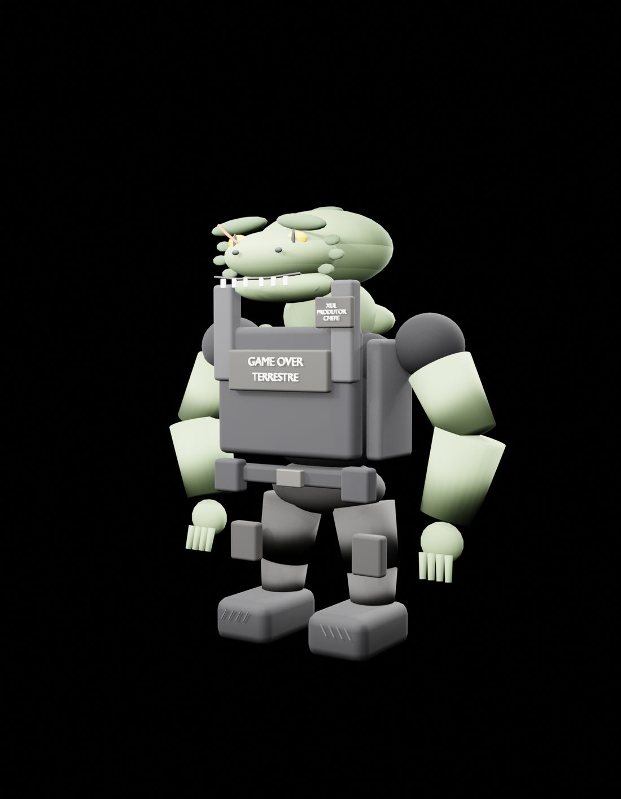
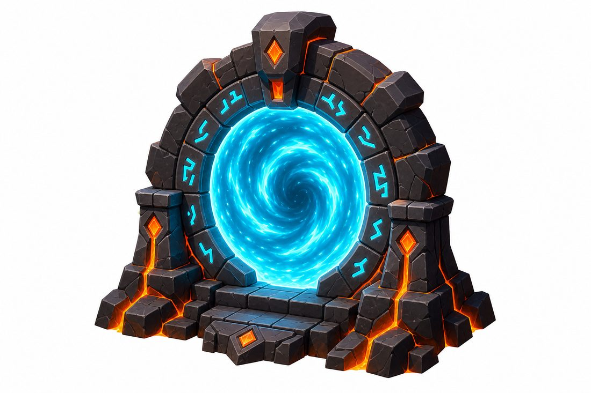
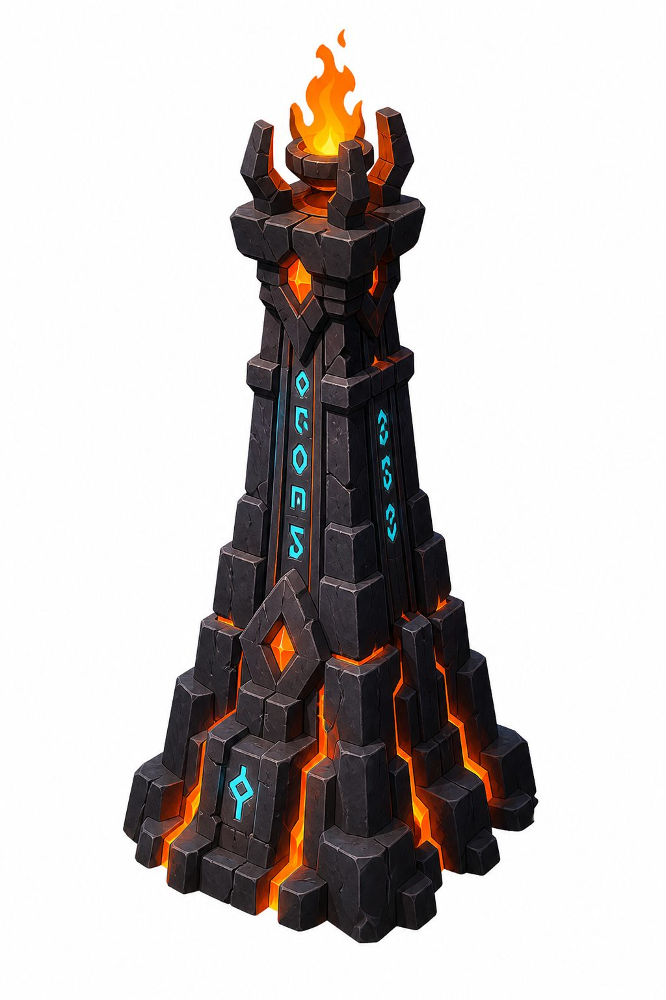
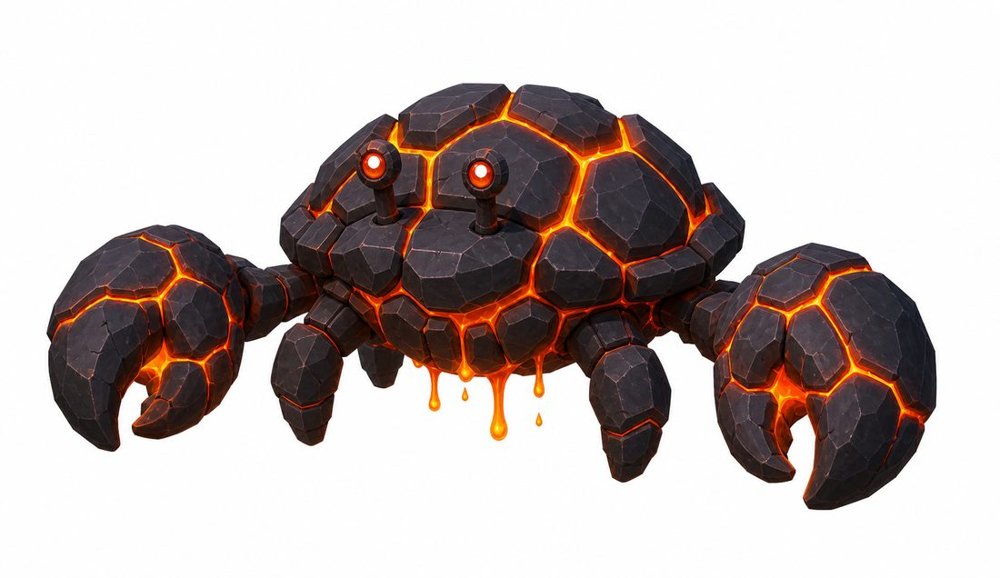
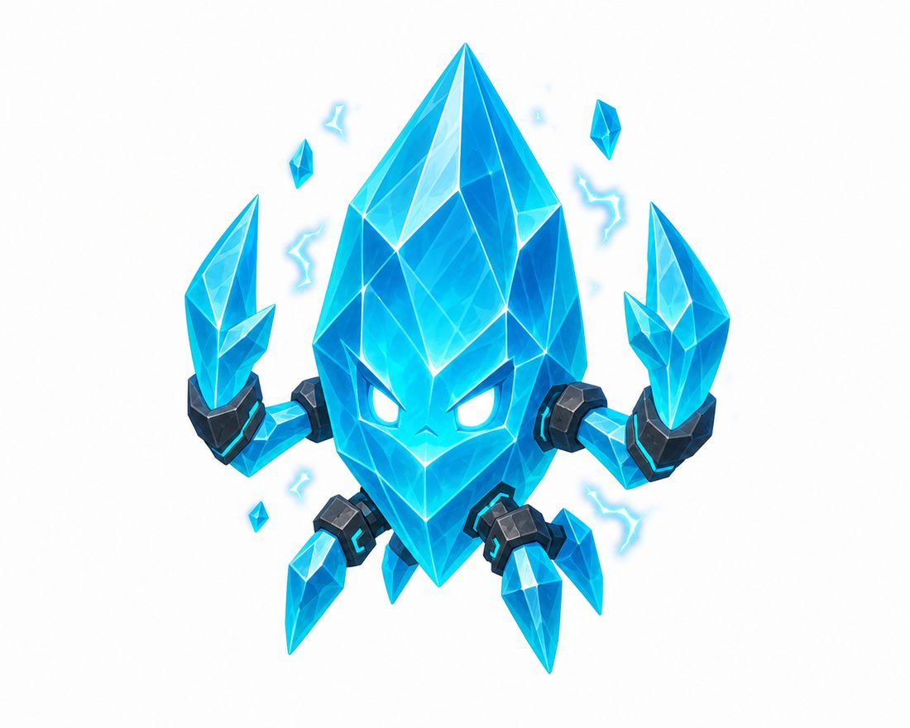
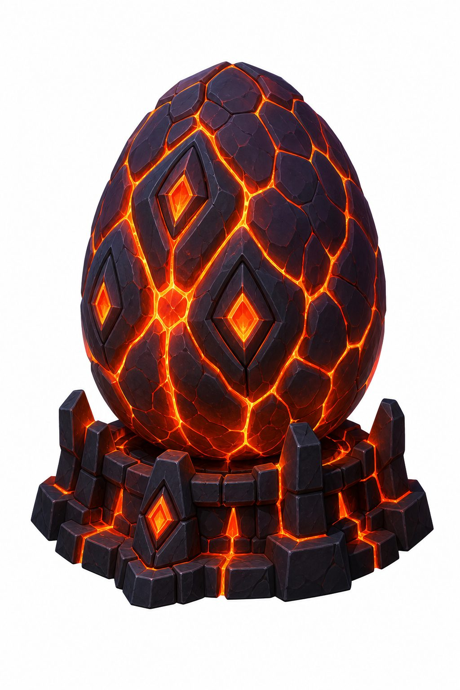
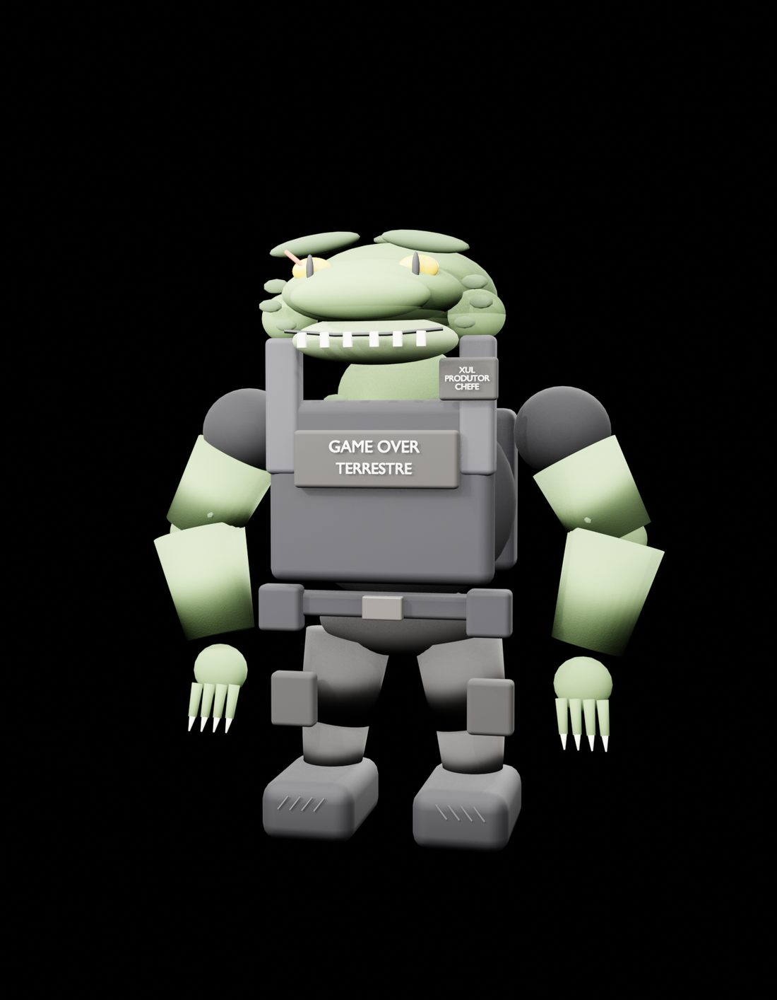
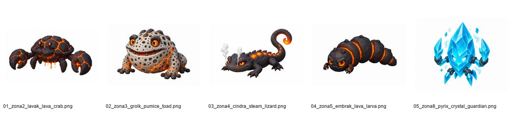

Sintonizar Cordas
A mecânica central: alinhe a frequência para estabilizar plataformas, abrir rotas e silenciar anomalias.
Estação orbital · Mundo 00
Uma corrida cósmica cartoon através de mundos abertos por portais. Sintonize as Cordas primordiais, atravesse Drakkareth e enfrente a vigia da torre — a Menina Pássaro.
KORDEX-7 é uma estação orbital de pesquisa acima da Terra. Dali, o alienígena pesquisador Zorg e o analista reptiliano Xul estudam humanos e contêm as anomalias que surgem quando as Cordas do Infinito — as linhas primordiais de energia que conectam universos — vibram fora de sintonia.
O jogador nasce no lobby, vê a Terra pela janela e escolhe um mundo pelo portal central. Cada portal leva a uma missão temática: comece por Drakkareth, o mundo vulcânico do fogo, e siga rumo a Aquaterra, Terralith e Viridion — até o mundo secreto Micelium Prisma.
A mecânica central: alinhe a frequência para estabilizar plataformas, abrir rotas e silenciar anomalias.
O centro do lobby funciona como seletor de mundo, mesa de briefing e lançador de party de 1 a 5 jogadores.
Colete Fragmentos de Corda, evolua de rank a partir de Semente Estelar e desbloqueie cosméticos, títulos e lore.
Véspera, a Menina Pássaro — a vigia da torre
Véspera observa os Aspirantes durante toda a subida e os confronta no topo. Sua presença é sentida antes de ser vista: olhos em janelas altas, uma sombra atravessando a parede, penas levadas pelo vento e uma silhueta imóvel contra a lua.
Ela funde menina, corvo e coruja em uma forma simples e original. Assusta pelo silêncio, pelo olhar e pelos movimentos repentinos — terror infantil, sem gore e sem horror adulto.
Renders, criaturas e cenários aprovados do canon








Protótipo Sintonia Runner V3 rodando no navegador — corrida procedural 3D com Three.js.
Ficha de produção da Menina Pássaro travada: silhueta, paleta, ataques e fases de boss.
Set de cenários e criaturas de Drakkareth definido do portal ao boss final.
Referência canônica, sistema de módulos e pipeline de animação/VFX estáveis.
Fluxo completo do lobby: spawn, câmera, portal, seleção de missão, party e retorno.
Módulos de entrada, travessia, puzzle, arena, perigo e recompensa + primeiras criaturas.
Seleção controlada por seed: mundo, dificuldade, party e progressão determinísticas.
Cada criatura ganha um comportamento sistêmico reutilizável e uma interação sem dano.
Animation, VFX, Mob, Pet, Module e Dungeon/Journey factories.
Links reais serão adicionados quando o teste público estiver disponível.